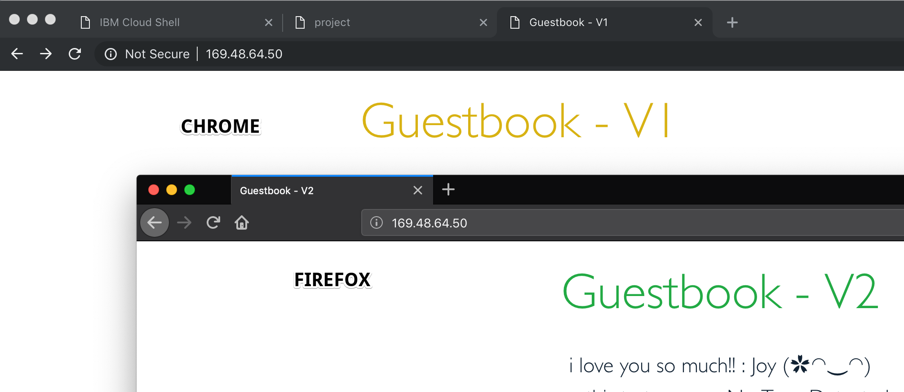

Exercise 4 - Perform traffic management¶
Using rules to manage traffic¶
Pilot is the core component used for traffic management in Istio. Pilot manages and configures all the Envoy proxy instances deployed in a particular Istio service mesh. It lets you specify what rules you want to use to route traffic between Envoy proxies, which run as sidecars to each service in the mesh.
Pilot translates high-level rules into low-level configurations and distributes this config to Envoy instances. Pilot uses three types of configuration resources to manage traffic within its service mesh:
- Virtual Services,
- Destination Rules, and
- Service Entries.
Virtual Services¶
A VirtualService defines a set of traffic routing rules. If a request matches to a routing rule, then it is sent to a named destination service (or subset or version of it) defined in the service registry.
Destination Rules¶
A DestinationRule is a policy that applies after routing has occurred. These rules specify configuration for load balancing, connection pool size from the sidecar, and outlier detection settings to detect and evict unhealthy hosts from the load balancing pool. Any destination host and subset referenced in a VirtualService rule must be defined in a corresponding DestinationRule.
Service Entries¶
A ServiceEntry configuration enables services within the mesh to access a service not necessarily managed by Istio. The rule describes the endpoints, ports and protocols of a white-listed set of mesh-external domains and IP blocks that services in the mesh are allowed to access.
The Guestbook app¶
The guestbook deployment has two versions: version 1 and version 2. Each version has three instances based replicas in guestbook-deployment.yaml and guestbook-v2-deployment.yaml.
By default, Istio will route requests equally across version 1 and version 2 using a round robin algorithm. However, new versions can easily introduce bugs to a service mesh, so using A/B Testing and Canary Deployments is good practice.
A/B testing with Istio¶
A/B testing is a method of performing identical tests against two separate service versions in parallel. To prevent Istio from performing the default routing behavior between the original and modernized guestbook service, define the following rules (found in istio101/workshop/plans).
Let's examine the rule:
apiVersion: networking.istio.io/v1alpha3
kind: DestinationRule
metadata:
name: destination-rule-guestbook
spec:
host: guestbook
subsets:
- name: v1
labels:
version: '1.0'
- name: v2
labels:
version: '2.0'
Create the destination rule,
kubectl create -f guestbook-destination.yaml
Next, examine the virtual service:
apiVersion: networking.istio.io/v1alpha3
kind: VirtualService
metadata:
name: virtual-service-guestbook
spec:
hosts:
- '*'
gateways:
- guestbook-gateway
http:
- route:
- destination:
host: guestbook
subset: v1
Apply the VirtualService
kubectl replace -f virtualservice-all-v1.yaml
The VirtualService defines a rule that captures all HTTP traffic coming in through the Istio ingress gateway, guestbook-gateway, and routes 100% of the traffic to pods of the guestbook service with label "version: v1".
a corresponding DestinationRule defines subsets, which are referenced as destinations in the VirtualService. Since there are three instances matching the criteria of hostname guestbook with subset version: v1, by default Envoy will send traffic to all three instances in a round robin manner.
Get the Ingress subdomain or NLB host name for your cluster,
NLB_HOSTNAME=$(ibmcloud ks cluster get --show-resources -c $MYCLUSTER --json | jq -r '.ingressHostname')
echo $NLB_HOSTNAME
Open the URL in a private window of Firefox or Chrome. You should see version 1 of the Guestbook application load.
To enable the Istio service mesh for A/B testing against version 2, modify the original VirtualService rule.
Examine the new rule:
apiVersion: networking.istio.io/v1alpha3
kind: VirtualService
metadata:
name: virtual-service-guestbook
spec:
hosts:
- '*'
gateways:
- guestbook-gateway
http:
- match:
- headers:
user-agent:
regex: '.*Firefox.*'
route:
- destination:
host: guestbook
subset: v2
- route:
- destination:
host: guestbook
subset: v1
Create the rule,
kubectl replace -f virtualservice-test.yaml

In Istio VirtualService rules, there can be only one rule for each service and therefore when defining multiple HTTPRoute blocks, the order in which they are defined in the yaml matters. Hence, the original VirtualService rule is modified rather than creating a new rule. With the modified rule, incoming requests originating from Firefox browsers will go to version 2 of Guestbook. All other requests fall-through to the next block, which routes all traffic to version 1 of Guestbook.
Canary deployment¶
In Canary Deployments, newer versions of services are incrementally rolled out to users to minimize the risk and impact of any bugs introduced by the newer version. To begin incrementally routing traffic to the newer version of the guestbook service, modify the original VirtualService rule:
kubectl replace -f virtualservice-80-20.yaml
Let's examine the rule:
apiVersion: networking.istio.io/v1alpha3
kind: VirtualService
metadata:
name: virtual-service-guestbook
spec:
hosts:
- '*'
gateways:
- guestbook-gateway
http:
- route:
- destination:
host: guestbook
subset: v1
weight: 80
- destination:
host: guestbook
subset: v2
weight: 20
In the modified rule, the routed traffic is split between two different subsets of the guestbook service. In this manner, traffic to version 2 of Guestbook is controlled on a percentage basis to limit the impact of any unforeseen bugs. This rule can be modified over time until eventually all traffic is directed to version 2 of the service.
View the Guestbook application using the $NLB_HOSTNAME and enter it as a URL in Firefox or Chrome web browsers. Ensure that you are using a hard refresh (command + Shift + R on Mac or Ctrl + F5 on windows) to remove any browser caching. You should notice that the Guestbook should swap between V1 or V2 at about the weight you specified.
Route all traffic to v2¶
For the following exercises, we will route all traffic to guestbook v2 with a new VirtualService rule:
cat <<EOF | kubectl replace -f -
apiVersion: networking.istio.io/v1alpha3
kind: VirtualService
metadata:
name: virtual-service-guestbook
spec:
hosts:
- '*'
gateways:
- guestbook-gateway
http:
- route:
- destination:
host: guestbook
subset: v2
EOF
Implementing Circuit Breakers with Destination Rules¶
Istio DestinationRules allow users to configure Envoy's implementation of circuit breakers. Circuit breakers are critical for defining the behavior for service-to-service communication in the service mesh. In the event of a failure for a particular service, circuit breakers allow users to set global defaults for failure recovery on a per service and/or per service version basis. Users can apply a traffic policy at the top level of the DestinationRule to create circuit breaker settings for an entire service, or it can be defined at the subset level to create settings for a particular version of a service.
Depending on whether a service handles HTTP requests or TCP connections, DestinationRules expose a number of ways for Envoy to limit traffic to a particular service as well as define failure recovery behavior for services initiating the connection to an unhealthy service.
Further reading¶
- Istio Concept
- Istio Rules API
- Istio Proxy Debug Tool
- Traffic Management
- Circuit Breaking
- Timeouts and Retries
Questions¶
- Where are routing rules defined? Options: (VirtualService, DestinationRule, ServiceEntry) Answer: VirtualService
- Where are service versions (subsets) defined? Options: (VirtualService, DestinationRule, ServiceEntry) Answer: DestinationRule
- Which Istio component is responsible for sending traffic management configurations to Istio sidecars? Options: (Mixer, Citadel, Pilot, Kubernetes) Answer: Pilot
- What is the name of the default proxy that runs in Istio sidecars and routes requests within the service mesh? Options: (NGINX, Envoy, HAProxy) Answer: Envoy